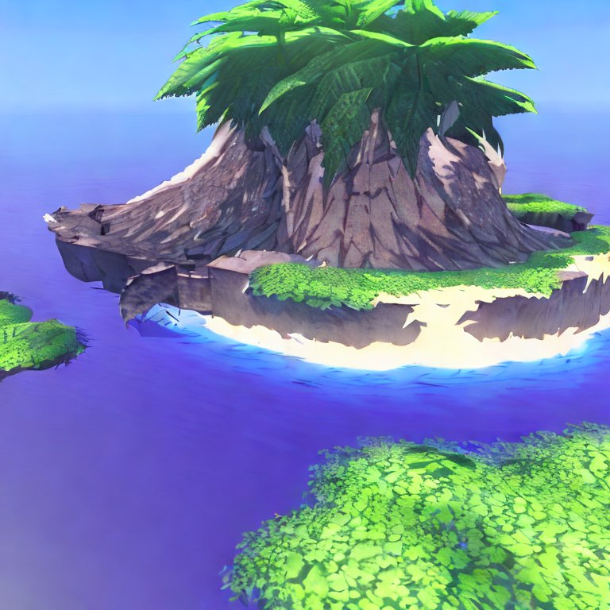

AI Generated Island ��
Tue May 9, 2023
so i asked 'stable diffusion' image generation AI to generate an 'anime style land surrounded by water' ya technically an "island", and it gave me this. even tho it looks like 'playstation classic graphics', i love it.
>>
1 / 0